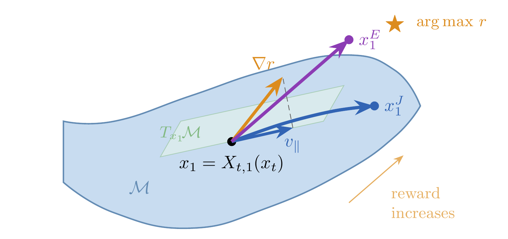
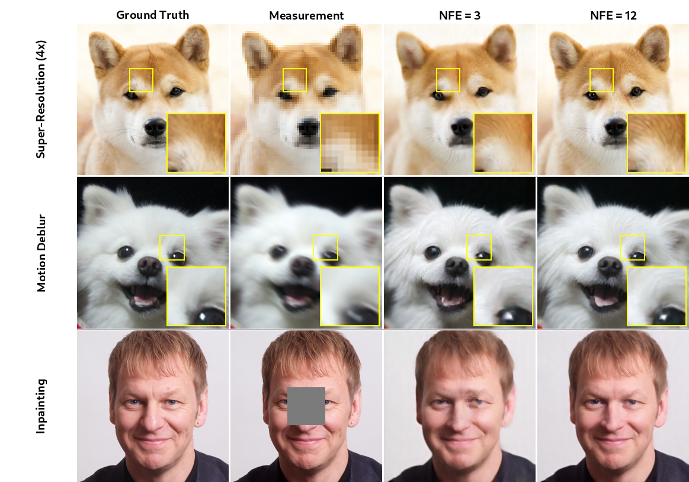
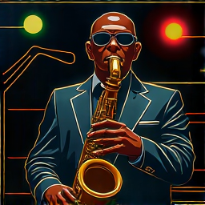

Modern image generators (like FLUX) are great at producing images, but what if you want the output to satisfy some extra constraint—match a measurement, look aesthetically pleasing, or follow a specific style? The standard approach requires hundreds of expensive neural network evaluations. We show that flow maps—models that learn to jump across time in a single step—let you do this with as few as 3 network evaluations, often matching or beating methods that use 10–70× more compute. We call our framework Flow Map Trajectory Guidance (FMTG).
1Background: Flows, Maps, and All That
What are flow-based generative models?
At the highest level, a flow-based generative model learns to transform random noise into structured data (like images). Imagine you have a cloud of random dots (Gaussian noise) and you want to smoothly morph that cloud into a distribution of realistic images. A flow defines the smooth path each dot takes to get there.
Mathematically, we learn a velocity field $b_t(x)$ that tells each point $x$ which direction to move at time $t$. Starting from noise at $t = 0$, we integrate this velocity forward to $t = 1$ to get a sample:
$$\dot{x}_t = b_t(x_t), \quad x_0 \sim \mathcal{N}(0, I)$$
In practice, you approximate this integral with many small Euler steps: take a tiny step in the direction of $b_t$, re-evaluate, step again, and so on. This typically requires 50–100 neural network evaluations (called NFEs), which is expensive.
Enter the flow map
Here’s the key insight that makes everything possible. Instead of learning just the velocity $b_t$, what if we learned a shortcut—a model that can jump directly from any time $s$ to any time $t$ in a single step?
That’s exactly what a flow map $X_{s,t}$ does. Given a state $x$ at time $s$, the flow map directly outputs where that state will be at time $t$:
$$X_{s,t}(x) = x + \int_s^t b_\tau(X_{s,\tau}(x))\, d\tau$$
The flow map satisfies a beautiful semigroup property: you can chain jumps together. Going from $s$ to $u$ and then from $u$ to $t$ is the same as going directly from $s$ to $t$:
$$X_{s,t}(x) = X_{u,t}(X_{s,u}(x))$$
Why does this matter? Because with a flow map, sampling an image costs just 1 network evaluation instead of 50–100. You literally call $X_{0,1}(x_0)$ and you’re done. In practice, people use a few steps for better quality, but the point is that flow maps make generation radically cheaper.
A flow map $X_{s,t}$ is a learned shortcut that jumps from time $s$ to time $t$ in a single step. While a standard flow model needs many tiny Euler steps, a flow map gets there in one leap. This is the enabling technology behind FMTG.
2The Guidance Problem
Okay, so we have flow models that can generate images. Great. But in practice, we rarely just want “any image.” We want images that satisfy additional criteria:
- Inverse problems: “Generate an image consistent with this blurry/low-res measurement”
- Aesthetic quality: “Make the image look more aesthetically pleasing”
- Style transfer: “Generate in the style of Starry Night”
- Prompt faithfulness: “Actually include all the objects I asked for”
These criteria are captured by a reward function $r(x)$. A high reward means the image is good according to our criterion. The goal of guidance is to steer the generative process toward high-reward samples—at test time, without any additional training.
The prevailing theoretical framework frames this as sampling from a reward-tilted distribution:
$$\tilde{p}_1(x) \propto e^{r(x)} p_1(x)$$
where $p_1$ is the original model’s distribution. In principle, you could sample this with multi-particle methods like Sequential Monte Carlo (SMC), but that requires maintaining many particles and is very expensive. Methods like Diffusion Posterior Sampling (DPS) reduce cost by guiding a single trajectory, but they rely on heuristic approximations that lack a principled foundation.
Our question is: can we do something principled with just a single trajectory?
3Guidance as Optimal Control
Instead of trying to approximate the reward-tilted distribution (a stochastic optimal control problem), we take a different path. We formulate guidance as a deterministic optimal control problem:
$$\min_u \; \int_0^1 \frac{\|u_t\|^2}{2\lambda}\, dt - r(x_1^u) \quad \text{s.t.} \quad \dot{x}_t^u = b_t(x_t^u) + u_t, \quad x_0 \text{ given.}$$
Let’s break this down in plain English. We’re searching for a control signal $u_t$—think of it as a little nudge we apply at each moment in time. We add this nudge to the base velocity $b_t$ to steer the trajectory. The objective has two competing terms:
- Reward $r(x_1^u)$: we want the endpoint to have high reward.
- Control cost $\frac{1}{2\lambda}\|u_t\|^2$: we don’t want to nudge too aggressively, or we’ll break the image quality.
The parameter $\lambda$ balances these: larger $\lambda$ means more aggressive guidance, smaller $\lambda$ means staying closer to the original distribution.
Why deterministic control?
This is a key departure from prior theory. The standard reward-tilting framework leads to stochastic optimal control, which requires integrating over all possible trajectories—fundamentally a multi-particle computation. By going deterministic, we commit to guiding a single trajectory, which is exactly what we want for efficient inference.
The optimal control solution
Using the Pontryagin Maximum Principle (a classic result from control theory), we can derive the optimal nudge:
$$u_t^* = \lambda \nabla X_{t,1}^{u^*}(x_t^*)^\top \nabla r\!\left(X_{t,1}^{u^*}(x_t^*)\right)$$
Translation: look ahead to where the trajectory will end up (via the flow map $X_{t,1}^{u^*}$), compute the gradient of the reward there, and project it back to the current time using the flow map’s Jacobian. This is beautiful but circular—we need the optimal flow map to compute the optimal control, but the flow map depends on the control.
The greedy approximation
To break the circularity, we replace the controlled flow map with the uncontrolled one $X_{t,1}$. This gives us a tractable guidance signal:
$$u_t(x) = \lambda \nabla X_{t,1}(x)^\top \nabla r(X_{t,1}(x))$$
This greedy approximation is justified from two complementary perspectives: it’s the globally optimal control in the small-$\lambda$ limit, and it’s the optimal greedy correction for any $\lambda$. So it’s not just a convenient hack—it’s principled.
4Flow Map Trajectory Guidance
Now we turn the theory into a practical algorithm. The idea is operator splitting: alternate between two operations:
- Flow map step: Use the flow map to advance the trajectory from $t_k$ to $t_{k+1}$. This integrates the base dynamics exactly.
- Gradient step: Nudge the state in the direction of increasing reward. Use the flow map to “look ahead” to the endpoint and compute the reward gradient.
Concretely, at each time interval $[t_k, t_{k+1}]$:
$$\tilde{x}_{t_{k+1}} = X_{t_k, t_{k+1}}(x_{t_k}) \qquad \text{(flow map step)}$$
$$x_{t_{k+1}} = \tilde{x}_{t_{k+1}} + \frac{\Delta t_k}{\lambda}\, u_{t_{k+1}}(\tilde{x}_{t_{k+1}}) \qquad \text{(gradient step)}$$
where $u$ is our guidance signal. We can also take multiple gradient steps per interval (controlled by $n_\text{opt}$) to better optimize the reward before advancing in time.
The beauty of this is that the flow map serves double duty:
- It advances the trajectory (replacing many Euler steps with one exact jump)
- It predicts the endpoint for computing the reward gradient (a free lookahead)
This makes FMTG inherently efficient. Each flow map step costs 2 NFEs (one to step, one to look ahead), and we can often get great results with just 1–5 intervals.
5How FMTG Works (Animated)
Let’s see this in action. The animation below shows how a single trajectory evolves from noise ($t=0$) to an image ($t=1$). Watch how the flow map jumps forward along smooth curves and the guidance nudges steer toward higher reward.
Here’s what’s happening step-by-step:
- Start from noise: We begin with a random point at $t = 0$.
- Flow map jump (blue curve): The flow map $X_{t_k, t_{k+1}}$ transports the point forward along a smooth trajectory—no Euler stepping needed.
- Look ahead (dashed blue): From the new position, use $X_{t_{k+1}, 1}$ to peek at where we’d end up at $t = 1$.
- Guidance nudge (red arrow): Compute the reward gradient at the predicted endpoint, and nudge the current position toward higher reward.
- Repeat: Do this for each time interval until we reach $t = 1$.
Notice how the unguided trajectory (dashed gray) misses the high-reward region, while the guided trajectory (solid blue) gets steered right into it. The red arrows are the guidance “nudges”—each one is small, but they accumulate to make a big difference.
6Jacobian vs. Euclidean Gradients
When computing the guidance signal, we have a choice of how to differentiate through the flow map. This gives rise to two variants:
FMTG-E (Euclidean)
The simple version: just compute the gradient of the reward at the predicted endpoint, without backpropagating through the flow map:
$$u^E(x, t) = \nabla r(X_{t,1}(x))$$
This skips the Jacobian $\nabla X_{t,1}^\top$, making it cheap (no backprop through the neural network). It works great when the reward landscape is simple (like $\ell_2$ reconstruction loss for inverse problems).
FMTG-J (Jacobian)
The full version: backpropagate through the flow map to get the true projected gradient:
$$u^J(x, t) = \nabla X_{t,1}(x)^\top \nabla r(X_{t,1}(x))$$
The Jacobian $\nabla X_{t,1}^\top$ projects the gradient onto the data manifold’s tangent space. Think of it this way: the Euclidean gradient might point in a direction that goes “off-manifold”—producing artifacts or unrealistic images. The Jacobian corrects this by keeping the update aligned with the directions that the generative model “understands.”

When to use which?
- FMTG-E: Great for simple losses like $\ell_2$ reconstruction. Fast, low VRAM (~8 GB). Achieves strong performance at very low NFEs.
- FMTG-J: Better for complex neural rewards (VGG style loss, VLM rewards, human preference models). Needs ~48 GB VRAM for backprop but produces cleaner, on-manifold results.
As reward complexity increases, the Jacobian becomes increasingly important. For VGG-based style transfer (~144M params), FMTG-J leads by 3.5 points on human preference. For VLM rewards (~7B params), FMTG-J is qualitatively preferred. The more complex the reward landscape, the more you need on-manifold projection.
7A Hierarchy of Methods
One of the nicest things about the FMTG framework is that it reveals a clean hierarchy connecting existing guidance methods. All the popular approaches turn out to be approximations of the same optimal control solution, at varying levels of fidelity:
$u_t^* = \lambda \nabla X_{t,1}^{u^*}(x_t^*)^\top \nabla r(X_{t,1}^{u^*}(x_t^*))$
$u_t = \lambda \nabla X_{t,1}(x)^\top \nabla r(X_{t,1}(x))$
Replace $X_{t,1}$ with Euler approximation $\hat{x}_1 = x + (1-t)b_t(x)$
The key insight: DPS, FlowDPS, and FlowChef all replace the learned flow map with a single Euler step (the “denoiser”). This is a coarser approximation that works okay but loses accuracy, especially at low NFEs. FMTG uses the actual pre-trained flow map, getting exact trajectory integration and on-manifold endpoint predictions for free.
This explains why FMTG can match these methods with 10–70× fewer NFEs: it’s using a strictly better approximation at every level.
Early stopping
One neat trick: we don’t have to apply guidance all the way to $t = 1$. In practice, stopping guidance at $t_\text{stop} = 0.75$ and letting the flow evolve freely for the last stretch helps avoid mode collapse—where the model over-optimizes for the reward and produces degenerate outputs. This is especially important for neural rewards, which have complex loss landscapes. We prove analytically that choosing $t_\text{stop}$ as a function of $\lambda$ recovers the variance of exact optimal control.
8Results
We test FMTG on three families of tasks using a FLUX.1-dev flow map backbone at 512×512 resolution.
Inverse problems
Super-resolution (4×), motion deblurring, and inpainting on AFHQ and FFHQ. FMTG-E achieves competitive or superior performance at extremely low NFEs (as few as 3), matching methods that use 10× more compute.

Human preference rewards
We guide FLUX with an ensemble of human preference models (HPSv2 + ImageReward + CLIP + PickScore). FMTG-J at 20 NFEs achieves 0.770 GenEval accuracy—matching fine-tuned approaches like FMTT (1400 NFEs) while using 70× fewer evaluations. At 100 NFEs, FMTG-J hits 0.800, a new state of the art.

Style transfer
Using VGG Gram matrix style loss, FMTG-J captures the target style most faithfully while preserving semantic content. The Jacobian projection is critical here—Euclidean-based methods (FMTG-E, FlowChef) tend to produce over-saturated artifacts.

VLM-guided generation
When base FLUX struggles with complex compositional prompts, FMTG can leverage a vision-language model (Skywork-VL-Reward-7B) to steer generation toward prompt-faithful outputs. The results are striking—details specified in the prompt that the base model consistently misses get properly generated.

9Takeaways
- Flow maps are the key enabler: They provide exact trajectory integration and free endpoint prediction, making guidance dramatically more efficient.
- Guidance is deterministic optimal control: Not reward tilting, not heuristic. This gives principled guidance for single-trajectory, few-step sampling.
- FMTG unifies existing methods: DPS, FlowDPS, FlowChef are all coarser approximations of the same optimal control solution.
- 3–100 NFEs, not 50–1400: FMTG matches or beats baselines with 10–70× fewer network evaluations across inverse problems, human preference, and style transfer.
- Two gradient flavors: FMTG-E (cheap, great for simple losses) and FMTG-J (on-manifold projection, essential for complex neural rewards).
We hope FMTG provides a useful and principled toolkit for anyone looking to steer flow-based generative models at test time. The framework is general—any differentiable reward function works—and the flow map backbone makes it fast enough for practical use.